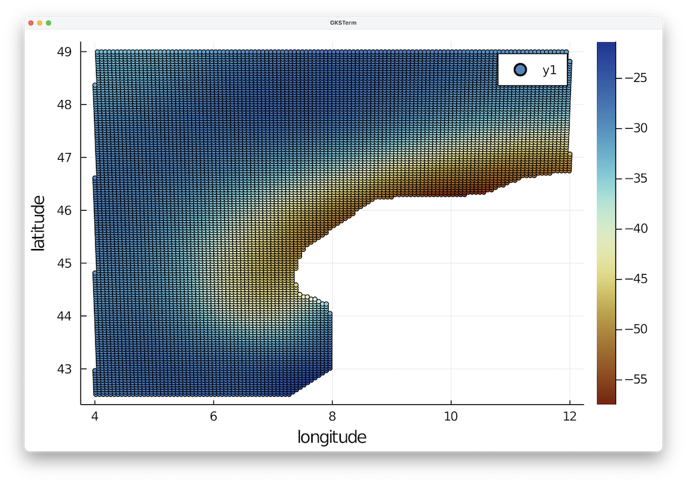
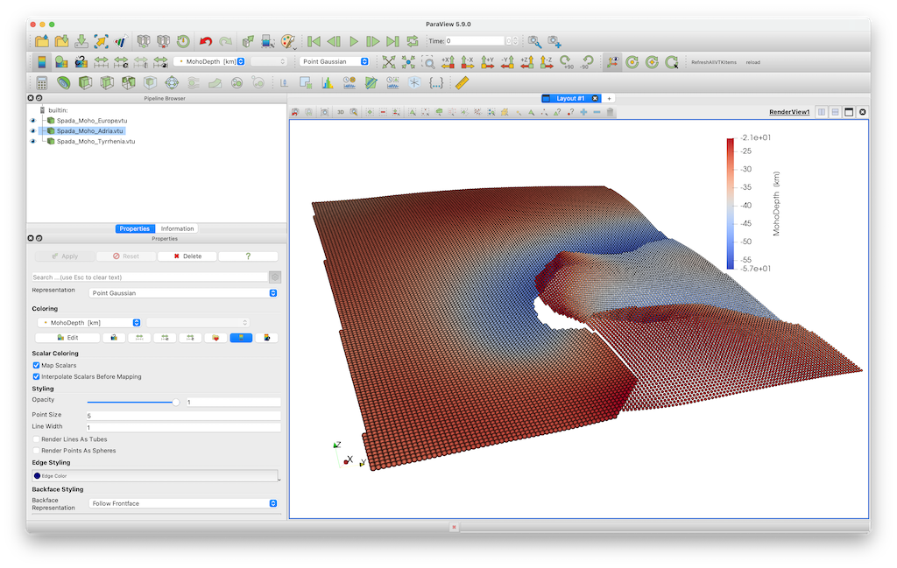
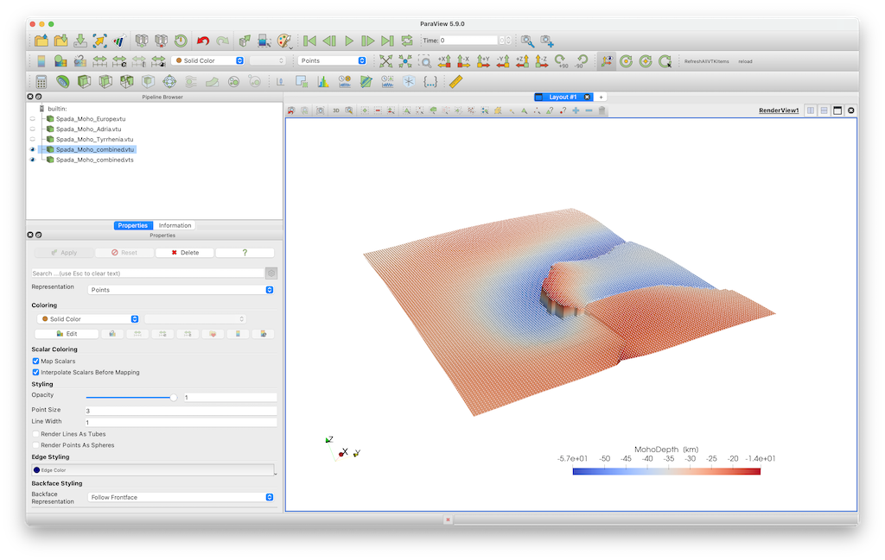

Moho topography
Goal
This explains how to load the Moho topography for Italy and the Alps and create a paraview file
Spada, M., Bianchi, I., Kissling, E., Agostinetti, N.P., Wiemer, S., 2013. Combining controlled-source seismology and receiver function information to derive 3-D Moho topography for Italy. Geophysical Journal International 194, 1050–1068. doi:10.1093/gji/ggt148
Steps
1. Download data
The data is available as digital dataset on the researchgate page of Prof. Edi Kissling https://www.researchgate.net/publication/322682919MohoMap_Data-WesternAlps-SpadaETAL2013
We have also uploaded it here: https://seafile.rlp.net/d/a50881f45aa34cdeb3c0/
The full data set actually includes 3 different Moho's (Europe, Adria, Tyrrhenia-Corsica). To simplify matters, we have split the full file into 3 seperate ascii files and uploaded it.
Please download the files Moho_Map_Data-WesternAlps-SpadaETAL2013_Moho1.txt, Moho_Map_Data-WesternAlps-SpadaETAL2013_Moho2.txt and Moho_Map_Data-WesternAlps-SpadaETAL2013_Moho3.txt
2. Read data into Julia
The data sets start at line 39. We read this into julia as:
julia> using DelimitedFiles
julia> data =readdlm("Moho_Map_Data-WesternAlps-SpadaETAL2013_Moho1.txt",' ',Float64,'\n', skipstart=38,header=false)
julia> lon, lat, depth = data[:,1], data[:,2], -data[:,3];Note that depth is made negative.
3. Reformat the data
Next, let's check if the data is spaced in a regular manner in Lon/Lat direction. For that, we plot it using the Plots package (you may have to install that first on your machine).
julia> using Plots
julia> scatter(lon,lat,marker_z=depth, ylabel="latitude",xlabel="longitude",markersize=2.5, c = :roma)
What we can see nicely here is that the data is reasonably regular but also that there are obviously locations where no data is define.
The easiest way to transfer this to Paraview is to simply save this as 3D data points:
julia> using GeophysicalModelGenerator
julia> data_Moho1 = GeoData(lon,lat,depth,(MohoDepth=depth*km,))
GeoData
size : (12355,)
lon ϵ [ 4.00026 - 11.99991]
lat ϵ [ 42.51778 - 48.99544]
depth ϵ [ -57.46 km - -21.34 km]
fields: (:MohoDepth,)
julia> Write_Paraview(data_Moho1, "Spada_Moho_Europe", PointsData=true) And we can do the same with the other two Moho's:
julia> data =readdlm("Moho_Map_Data-WesternAlps-SpadaETAL2013_Moho2.txt",' ',Float64,'\n', skipstart=38,header=false);
julia> lon, lat, depth = data[:,1], data[:,2], -data[:,3];
julia> data_Moho2 = GeoData(lon,lat,depth,(MohoDepth=depth*km,))
julia> Write_Paraview(data_Moho2, "Spada_Moho_Adria", PointsData=true)
julia> data =readdlm("Moho_Map_Data-WesternAlps-SpadaETAL2013_Moho3.txt",' ',Float64,'\n', skipstart=38,header=false);
julia> lon, lat, depth = data[:,1], data[:,2], -data[:,3];
julia> data_Moho3 = GeoData(lon,lat,depth,(MohoDepth=depth*km,))
julia> Write_Paraview(data_Moho3, "Spada_Moho_Tyrrhenia", PointsData=true) If we plot this in paraview, it looks like this: 
3.1 Fitting a mesh through the data
So obviously, the Moho is discontinuous between these three Mohos. Often, it looks nicer if we fit a regular surface through these data points. To do this we first combine the data points of the 3 surfaces into one set of points
julia> lon = [data_Moho1.lon.val; data_Moho2.lon.val; data_Moho3.lon.val];
julia> lat = [data_Moho1.lat.val; data_Moho2.lat.val; data_Moho3.lat.val];
julia> depth = [data_Moho1.depth.val; data_Moho2.depth.val; data_Moho3.depth.val];
julia> data_Moho_combined = GeoData(lon, lat, depth, (MohoDepth=depth*km,))Next, we define a regular lon/lat grid
julia> Lon,Lat,Depth = LonLatDepthGrid(4.1:0.1:11.9,42.5:.1:49,-30km);And we will use a nearest neighbor interpolation method to fit a surface through the data. This has the advantage that it will take the discontinuities into account. We will use the package NearestNeighbors.jl for this, which you may have to install first
julia> using NearestNeighbors
julia> kdtree = KDTree([lon'; lat'])
julia> idxs, dists = knn(kdtree, [Lon[:]'; Lat[:]'], 1, true)idxs contains the indices of the closest points to the grid in (Lon,Lat). Next
julia> Depth = zeros(size(Lon))*km;
julia> for i=1:length(idxs)
Depth[i] = depth[idxs[i]][1]
endNow, we can create a GeoData structure with the regular surface and save it to paraview:
julia> data_Moho = GeoData(Lon, Lat, Depth, (MohoDepth=Depth,))
julia> Write_Paraview(data_Moho, "Spada_Moho_combined") The result is shown here, where the previous points are colored white and are a bit smaller. Obviously, the datasets coincide well. 
4. Julia script
The full julia script that does it all is given here. You need to be in the same directory as in the data file, after which you can run it in julia with
julia> include("MohoTopo_Spada.jl")